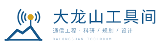
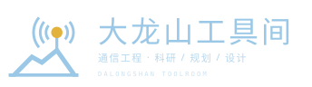
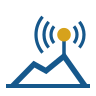
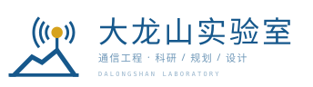

两道山脊
延续现有双山图标的轮廓，一大一小、一高一低，指代大龙山本身。折线保持工程制图的直率，不做圆滑的山形插画。
MARK CONCEPT — SIGNAL RIDGE
以大龙山的两道山脊为骨架，把通信桅杆、覆盖弧线与测绘基准线并置在同一个几何结构里。它既是山的轮廓，也是站点、覆盖与图纸的轮廓——工具间与实验室共用同一枚符号。

延续现有双山图标的轮廓，一大一小、一高一低，指代大龙山本身。折线保持工程制图的直率，不做圆滑的山形插画。
较高的山峰同时是一根基站桅杆。信号弧以塔顶黄点为中心：右侧两道，左侧三道，外圈半径 28，形成朝左上方多伸一瓣的定向波瓣——既是无线电覆盖，也把视觉重心从右下往左上提。
贯穿底部的测量基准线把图形“压”在图纸上；塔顶的赭黄点既是站点，也是整枚标识唯一的热色，作为视觉锚点。

站点只有“白图 / 蓝图”两套主题，标识因此也只做两套明度。线宽、比例、赭黄点位置完全不变，仅把主色替换为蓝图模式下的浅蓝，保证在深底上仍然清晰。

16 px 以下不再使用细线版，改用蓝底纸白的实心图标。桅杆、山脊与信号弧在 32 px 仍可辨认；16 px 时保留整体剪影即可。

符号不绑定“工具间”三个字。更名实验室时，只替换字标与英文行，山脊、桅杆、信号弧、基准线全部保留——这正是从工具集走向研究平台时，品牌资产需要保持连续的部分。